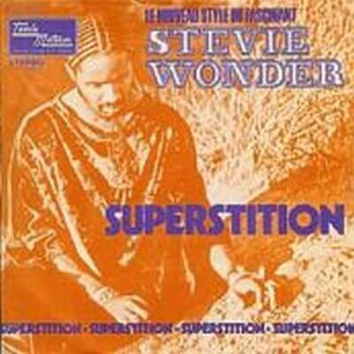

"Superstition" was the first single for the album Talking Book by Stevie Wonder in 1972, reaching number one on numerous lists. Wontwo Grammy Awards, one for Best Male Vocal Performance R&B, and another for best R&B song. It is one of the best funky songs of all time with one of the most extraordinary "grooves" ever built.
The magazin Rolling Stone ranked the song at number 74 in the list of the 500 Greatest Songs of All Time. The lyrics of the song relates mainly superstitions, mentioning several popular throughout the song superstitious fables, facing the negative effects that these superstitious beliefs can bring.
Jeff Beck was an admirer of the music of Wonder and Stevie was informed of this before the Talking Book album sessions. Although at this point it was mostly playing all the instruments in his songs himself, Wonder still preferred to let other guitarists were playing in their records, and therefore he liked the idea of a collaboration with Beck, a star guitarist. An agreement was quickly reached by Beck to participate in the sessions that became the album Talking Book, in exchange for Wonder write a song. While between sessions, Beck came up with the opening drum beat, which eventually led to the creation of Wonder "Superstition". Besides the opening drum beat, Beck has contributed to some of the lyrics and together with Wonder created the first demo of the song. Initially, the plan was that Beck was the first to publish the song with his newly formed power trio Beck, Bogert and Appice. However, due to the delay in the release of the debut album from the trio, and the opinion of the head of Berry Gordy's Motown that he believed "Superstition" would be a great success and would help in selling album, Wonder finished accessing post the song as the first single, anticipating the release of Jeff Beck.
In the recording, the song's opening drum beat was performed by Wonder on the kit that Scott Mathews provided at the Record Plant in Hollywood. The funky clavinet riff played on a Hohner Clavinet model C, and the synth bass, were also performed by Wonder. The song also features trumpet and tenor saxophone, played respectively by Steve Madaio and Trevor Laurence.
Video
One of the most spectacular performances was his involvement in the children's program Sesame Street.

Lyrics
Very superstitious, writing's on the wall,
Very superstitious, ladders bout' to fall,
Thirteen month old baby, broke the lookin' glass
Seven years of bad luck, the good things in your past.
When you believe in things that you don't understand,
Then you suffer,
Superstition ain't the way
Very superstitious, wash your face and hands,
Rid me of the problem, do all that you can,
Keep me in a daydream, keep me goin' strong,
You don't wanna save me, sad is my song.
When you believe in things that you don't understand,
Then you suffer,
Superstition ain't the way, yeh, yeh.
Very superstitious, nothin' more to say,
Very superstitious, the devil's on his way,
Thirteen month old baby, broke the lookin' glass,
Seven years of bad luck, good things in your past
When you believe in things that you don't understand,
Then you suffer,
Superstition ain't the way, no, no, no.